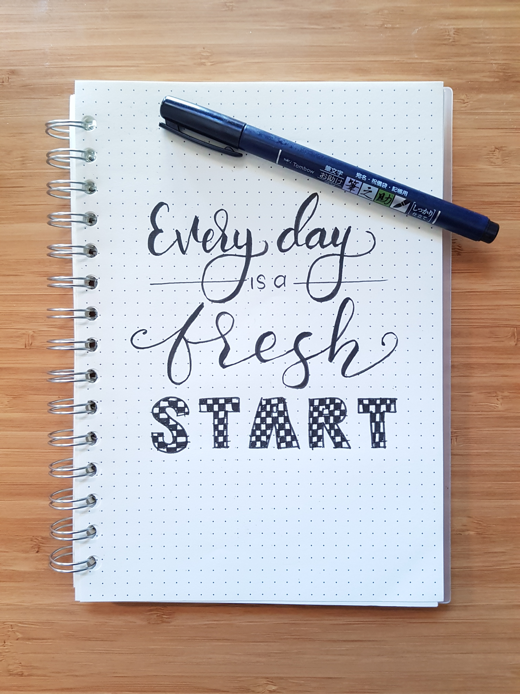

 "Calligraphy is the art of putting life in letters". The marvelous art of calligraphy attracted me towards itself and here I am! No sooner I learnt a little of this art, it started becoming my hobby. Then, I decided to make a youtube channel dedicated to calligraphy only. Click Here for the channel's link : SelfLearned Calligrapher. You may subscribe it if you're interested in calligraphy videos.
The website you are visiting is solely designed and developed by me. Also, I am a python programmer and ever-ready to learn something new in the tech-world. Computer science, AI, Machine Learning, etc. all are the topics which always attract me. So, hope I will become a better software developer in the coming future :)
As a beginner, we all have a doubt in our minds related to what to buy for a better calligraphy experience. Believe me, even if you have a normal PENCIL, you can do quit good job! Alternatively, you can also use a normal gel pen or a ball pen to practice as a beginner. Later on, you can purchase a broad nib pen (Pilot Parallel recommended) for gothic and blackletter calligraphy and a dip nib pen for cursive or copperplate calligraphy. Brush pens are extras for decorative writing, but you should not buy a brush pen if you have just started as they are quit complicated when it comes to practical use.